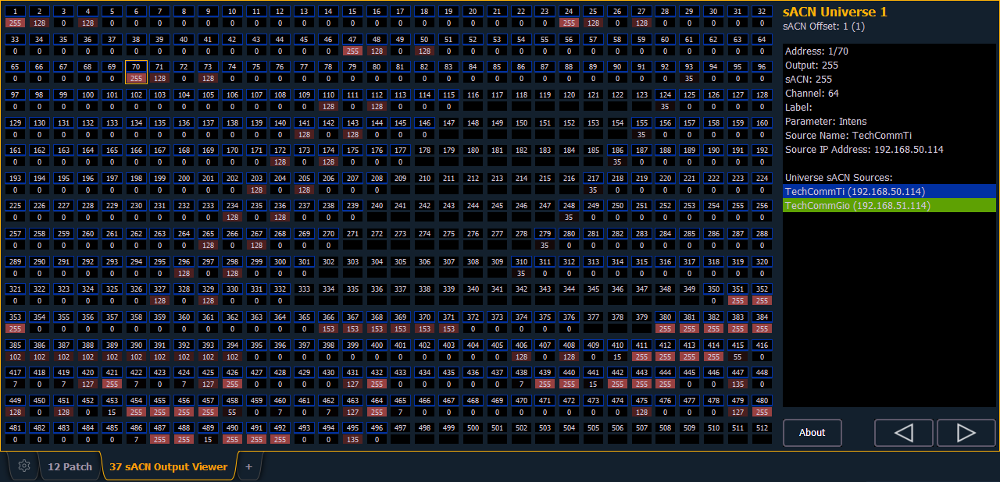
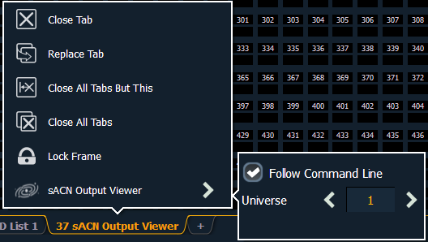

You can open the sACN Output Viewer by pressing [Tab] & [3][7] or selecting the sACN Output Viewer icon from the home screen.
The sACN Output Viewer is a place to check the current live outputs on a universe by universe basis.

The left side of the viewer is the universe grid. It displays 512 address cells. Cells outlined in a color are currently patched addresses. Each patched cell contains an address number and output value. Unpatched cells are black and only have an address level.
Output values are 0 through 255. 0 is displayed in black and 255 is in bright red. The red output value color will grow brighter as the output value increases.
If there is a channel or address selection on the command line, the appropriate address cell will be outlined in gold. You can also press on a cell to select it but it will not post to the command line. Information about the selected address will display to the right of the grid.
Any available sACN sources will be displayed in the right panel, and are color coded. The address cells will use that same color coding to indicate the device it is patched to.
Press {About} to open the About Address display in the CIA.
Press the {t} or {u} buttons to scroll through the available universes.
The output viewer has a configuration menu, which is accessed by first selecting the viewer tab and then double clicking on the tab to open the menu. With the output viewer selected, you can also select the gear icon, which is located by the tabs, to open the configuration menu.

The following options are available in this configuration menu: